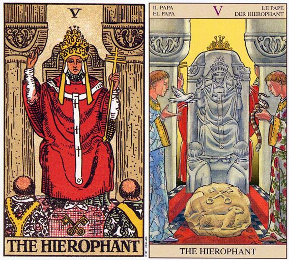

教皇这张塔罗牌可能对于中国人来说会比较陌生，因为教皇这词和我们的生活会比较遥远，会相对于来说让人难以深刻的理解。但实际上，教皇这张塔罗牌就相当于我们的现实生活中的精神领袖，带领着或引领着我们，如我们的生活导师一样，他充满着智慧，可以通过他让了解并获得知识和智慧的指点。今天我们就来分析分析塔罗牌解释中的塔罗牌教皇，相信这是一篇会让读者全面了解关于塔罗牌教皇解释比较全面的文章。塔罗牌教皇牌面故事
教皇身穿大红袍子，端坐在信众前。他头戴象征权利的三层皇冠，分别代表身、心、灵三种层次的世界。他的右手食、中指指向天，象征祝福，左手持着主字形的令牌，象征神圣与权力。他耳朵旁边垂挂的白色小物，代表内心的声音。教皇前方放着两把交叉的钥匙，在很多版本的塔罗牌里，钥匙是金色银色各一把，象征阳与阴，日与月，外在与内在，我们的课题就是要学会如何结合两者，而钥匙本身可用以开启智慧与神秘之门。教皇前方的两位信众，左边的身旁象征热情的红玫瑰花纹衣裳，右边则穿象征心灵成长的白百合衣裳（红玫瑰与白百合在魔术师也曾出现过）。教皇后方则是两根柱子，它们是灰色的，灰色象征由经验而来的智慧。另一说则是教皇后方虽无女祭司的帷幕将潜意识隔离，但暗沉的灰色代表通往潜意识之路仍未开启。柱子上的图案象征肉体结合。
塔罗牌教皇解释
1.塔罗牌：教皇(The Hierophant)
2..相关词：传统、援助、仪式
3..对应占星：木星
4.对应人物：Chiron
5.四元素：土元素
6.加强牌：皇帝、圣杯三、星币三、星币八、星币十
7.每月23日--教皇，塔罗牌大阿卡那的第5张是“教皇”，他是神圣、神秘事物的诠释者，象征人类的认知及信仰。教皇的知识充满奥秘，即使抽象的事物也受它主宰。牌面正立时，表示信心十足、不疑不虑及对事物有正确理解力。牌面倒立则是爱说教、唱高调以及独断。
8.相关传说：Cronos之子，人头马身具有不死能力的医者，智者，也就是占星中的凯龙星。
教皇代表需要为你的心灵成长，及人生方向付起责任。
9.教皇 THE HIEROPHANT 暗示你屈服于某人或某个团体依照他人的期望行事，流于形式和规矩。 逆位的代表新的思想形式。老旧观念的退却。
10.教皇坐在一张华丽的椅子上，右手举向天空，左手持着一根有三重十字的宝杖。在白上衣外面罩了一件红色长袍，头上戴着一顶三层的金色王冠。袍带上面有三个十字图案，连鞋子上面也有十字图形。座位前放了两只有十字图案的金钥匙，脚前跪着两名信徒。其中一名所穿的衣服上有红玫瑰图案，另一名衣服上则有白百合，这些图案令人联想到魔术师。
11.身后的石柱是暗灰色的，因为这座教堂(或建筑物)及其结构对于真理的追寻而言，实属次要。他手上及袍带上的三重十字，以及三重皇冠意指圣父、圣子及圣灵，有些人则视之为灵魂、心智及肉体。
12.教皇以他的右手传导来自天空的能量，这正如同魔术师，不过他是透过宝杖将能量传导给信徒。信徒们觉得他们需要这教皇，以便和上帝有所接触，他们并不知道他们随时可以直接和上帝接触。教皇为他们示范这么做的方法，给了他们方向，只要遵循着，便可以找到和上帝连结的道路。
13.这是一张有关宗教信仰或传统的牌。皇帝负有提供物质条件的责任，而教皇的义务则是提供心灵上的方向和引导。在组织化的宗教或教堂中，教皇为一般人展示了解他们心灵需求的方法，而这种方法并不需付出多大的努力，或放弃太多的自我。教堂提供一个向心灵接近的道路，让那些没有求道之心的一般人，不致成为迷途的羔羊。
14.传统上十字钥匙是一金一银的，金钥匙开启外在的世界，银钥匙则打开内心世界，没有着两把钥匙，你可能会失去这个世界所蕴藏的知识。在莱德-伟特所涉及的牌中，两把钥匙都是金的，暗示如果只遵循外在教条，是不太可能真正了解其中所传递的讯息。只要你允许他认为你和上帝联系，你就得冒着相信他们对上帝或宇宙的认知的危险，而不能藉有你自身的直接经验来发展自己的理解。你丧失了发展准确判断力所需要的直接经验。
15.简单而言，教皇(第五张牌)暗示你的心胸正趋于窄小，因为一旦你允让别人负起你心灵成长的责任，你就不太可能让自己得到直接的经验。只有透过直接的经验，你才能亲身体验到上帝，并确定谁或什么是上帝。如果我告诉你我所体验到的上帝，那你需要的是信仰。如果你亲自去接触上帝，你便可以得到一个或许会带来理解的经验。相信你不了解的事情实在是一桩冒险的事情。而亲身去经验可以提供证据，消除信仰上的需要。
16.这两根石柱代表使你免于做选择、免于负起个人责任的结构。通常教皇代表教堂、教条及教育。这一张代表金牛座的牌(和五角星国王及五角星四有相同的意义)。金牛座的课题之一是“我的方式并不是唯一的方式”。并非相信、进入或生活于某种状况的唯一方式。这个课题在宗教团体的身上表现的特别明显，他们绝对相信他们与上帝接近的方式是唯一值得拥有的方式，是一种“只有和我们拥有同样信仰的人才可以得到救赎”的方式。
塔罗牌教皇牌面解释
教皇穿着红袍坐在信众面前，头上戴着象征权力的三层皇冠，就是分别代表着物质、精神、道德三种层次的世界认知。耳边的白色挂饰，则代表着他聆听的信众心声的使命。他的右手食指和中指指向苍穹，象征着宗教中的赐福，而左手的令牌则预示了神圣且至高无上的权力。在教皇的脚下有一对交叉摆放的钥匙，一金一银，分属阴阳，据说那是传说中的日月之匙，可任意开启智慧与神秘之门。教皇面前的两名信众，左边的身着红色的玫瑰袍，代表热情与爱心；右边的身着白百合外衣，代表内心的圣洁和灵性的成长。教皇与女祭司都是代表有关宗教精神与内心世界的塔罗牌，然而与女祭司不同的是，女祭司信守着着一切的律法和知识，将宗教精神中的智慧融入自身的修为，可谓是深藏不露、独善其身；而教皇则代表耶稣传教的精神，将智慧视为真理并广为传播，他关怀世间的一切疾苦，身体力行，来引导着一切事物的智慧帮助愚昧的世人。
塔罗牌教皇牌义解释
1.教皇，如同他的名称，与宗教有强烈的关联。不过教皇所属的宗教是有组织的教会或教派，他是人世且走入人群的，这与女祭司的隐士的离群索居大有不同。
2.教皇是宗教和精神上的权威，他总会为我们找到心灵上的出口，他的慈悲与德行，能够指示我们避免误入歧途，踏上认清良心，觉今是而昨非的道路。尤其当你感到内心忏悔的时候，他总会乐于静听你的忏悔。
3.教皇与皇帝都是父亲形象的代表，但是皇帝是提供物质的父亲，而教皇则是提供心灵成长与道德教育的父亲。皇帝重视外在的法律与约束，教皇则代表内心的服从性。教皇教导我们的传统价值与伦理道德。
4.教皇也代表学校教育，以及任何所谓正统的教育。就像教皇所属的教会是庞大的组织，教皇所代表的教育形式也是社会大众认同的，在学校中学生学到社会大众希望他们学的价值观，虽然会阻碍个人部分心灵发展，却是群体生活中不可或缺的一环。
5.教皇并非独自在深山中修行，而是在宗教组织下服务。教会拥有固定的体系，延伸出去，教皇也可以代表各级机关团体或学校，或任何与群体有关的事物。
6.所以教皇牌也象征仪式：毕业典礼、结婚典礼、成年礼、丧礼等。这些仪式同样属于社会规范的一种。
7.在预测上，教皇也可能表示心灵上的追求【重心往往是道德】，也可能代表有长辈帮助或贵人伸出援手。他们可能会给当事人专业的建议或实质上的援助。教皇也可能显示当事人参加某个仪式或典礼。在感情预测上，教皇通常表示一段非常传统或柏拉图式的恋情。教皇若代表人物，他可能是神职人员、教师、长者、贵人、专业人士、典礼主持人、长官、保守分子卫道人士等。
塔罗牌教皇解牌参考
正位
1．参加团体活力，并且得到承认。
2．会出现能够指引你的人，给你正确的意见。
3．严谨的教育，给予引导和教诲。
4．教士，老师，长者，贵人，专业人士，保守分子或者卫道士。
5．参加婚礼，葬礼，宗教仪式，成人礼或者毕业典礼。
6．可能会有结良缘的机会，教导式的爱令你受益匪浅。
逆位
1．极度地固执，或者极度地标新立异。
2．打破常规，打破平常的戒律和道德规范，大胆地创新。与众不同。
3．过于保守，要求严格不近人情的规范而引发反感。
4．不宜参加团体仪式或者典礼。
5．无教养，缺乏引导的年轻人。
6．盲目的爱情，令人不满意，缘分浅薄。
塔罗牌教皇正位释义
1.基本含义：值得信赖的、会得到援助、良好的建言者、有贡献的、心胸比较宽广、有宗教情绪的。
2.健康生活：有遇到好医生的机会、化妆时偏重于嘴唇会带来好运、口红非常适合使用粉色系。
3.工作学业：多听他人的劝告、遇到良师就会使成绩进步、出现对自己有帮助的人、与学长或同学一起用功而获益、耐力特别的充足、思想保守、非常适合从事顾问或医学工作以及以谈话为主的工作。
4.恋爱婚姻：值得信赖的恋人、对恋情持谨慎态度、非常博爱、婚嫁、良缘、媒人给牵线搭桥、能够安全交往的对象、年长的异性、逐渐加深的恋情、长久持续的交往。
5.人际财富：获得学长的赏识、获得父母的资助、事事为朋友着想、容易遗失钱包。
6.其他：听一场音乐会或是看一场电影、前往寺庙上香许愿、拥抱大自然。
7.温柔、博爱、受人信赖、受重视、工作出色、贡献突出、眼界狭窄、从善如流而得到好处、有贵人相助、适宜接触宗教、与年长的异性有缘、姻缘佳
8.援助，同情，宽宏大量，可信任的人给予的劝告，良好的商量对象，得到精神上的满足，遵守规则，志愿者。
9.信心十足，能够正确理解事物的本质，工作上外来的压力过多，别人对你的期望值也很高，使你有被束缚的感觉。应该寻找新的工作方法，尽管会面对很大的阻力，但结果会证明这样做是值得的。爱情上屈从于他人的压力，只会按照对方的要求来盲目改变自己，自以为这是必要的付出，其实不过是被迫的选择。伴侣也不会对你保持忠诚，并很难满足双方真实的需要。
塔罗牌教皇逆位释义
1.基本含义：失去信赖、喜好多管闲事、太过依赖他人、心胸狭隘、被强迫推销、孤立无援。
2.健康生活：要多运动、呼吸道疾病、频咳、偏食。
3.工作学业：因轻视而品尝到苦果、因厌恶老师从而会对课业失去兴趣、过分依赖同学所做的笔记、得到错误的情报。
4.恋爱婚姻：缘分比较浅、步调比较缓慢、彼此不够体贴、占有欲太强、因固执令人反感、父母反对。
5.人际财富：干涉他人的事情、令人困扰的好意、自以为是、没有必要的义气、因助人而损失金钱、没有人给提供帮助。
6.其他：恐高、喜欢清静的生活、不宜乘坐飞机旅行。
7.冷漠、善于表达、太罗嗦、孤立无援、成功无望、眼界开阔、思路敏捷、改变以往感情上的不足、不被认同的恋情、对伴侣关心过度、姻缘淡
8.错误的讯息，恶意的规劝，上当，援助被中断，愿望无法达成，被人利用，被放弃。
9.牌面倒立则表示事业上多了些灵活的态度，不再刻板遵循旧有的方式，勇于创新形成自己独特的理念，为自己的真实想法而活、而工作。感情上开始正视自己对感情的真实感受与做法，尽管依旧会听取对方的意见，但以不会全盘接受。当你感到无法接受对方的意见时，会及时与其沟通，找出改善关系的做法。
塔罗牌教皇大体上的意义
教皇(The Hierophant)暗示你向某人或某个团体的人屈服了。或许这正是你为自己，及心灵上的需求负起责任的时刻了。你目前的行事作风并非应付事情的唯一方式，假设你愿意加以探索的话，或许你就会找到新的可能。
塔罗牌倒立的教皇
1.塔罗牌中所有倒立的五都意味着心胸开阔，教皇亦不例外。它代表新思想、观念的形成，或拒绝一些流于俗态的观念。它也可以说你在为自己人生写脚本，照着自己对生命的理解而活。
2.现在你正为自己的心灵发展负起责任，虽然道路可能是崎岖不平的，然而这通常是值得的。有时候倒立的教皇可能表示，你为了一个具有非正统理念的教派或团体而排斥正统的理念或理论，而这个教派或团体，会为你的心灵发展负起责任——为了一个团体而放弃另一个团体。有些人需要别人为他们负责，而有些人则会利用这种需要，所以导师及大师就越来越多了。
3.我并不是在暗示说这些人没有找到他们的方法或道路，但是你们的道路却不见的就是他们的道路。遵循他人的脚步而行，并不保证就一定会得到启发。可能有人不同意我的看法，例如在法国的卢尔德(Lourdes)，于西元一八五八年时，圣母玛丽亚曾向一名十四岁女孩Bernadetle Soubirous显灵，而今该地每年吸引了逾五百万游客或朝圣者的到访。
塔罗牌教皇两性关系上的意义
1.教皇所形容的这段关系，是遵从他人期望的一段关系。这段关系中的伴侣很难忠实于自己，也很难忠实于在两性关系中他们真正的需求，因为他们在适应他人对他们的期望上觉得压力重重。
2.西莉亚抱怨先生侏罗日以继夜的工作，以至于他们的婚姻生活变得索然无味。当我在稍微深究时，我发现她会和侏罗结婚，是由于她家人的大力赞成。她坦言已开始她宁愿去环游世界，或许在决定一位长期伴侣之前，还可以多碰到一些对象，然而她的家人觉得她是打算“做一些恣意妄为的事”，因而向她施压要她结婚。起初，她颇享他们的好意，但是四年之后，她便为没有反抗他们的压力而深感懊悔。
3.教皇也可能暗示你的两性关系已流于一种形式或规矩，你的态度变成“别人怎么做，我就跟着怎么做”，而这并不是去经历一段两性关系的唯一方式。你应该去找寻另一种新方式，可能你会感受到周遭的人所形成的阻力，但后来还是可以证明这么做是值得的。
塔罗牌教皇爱情
正位
1.这是一份受到祝福的爱情，你和他之间在一起是非常稳定而有结果的，你几乎可以认为你们的结合就是注定一般的，他就是你今生注定的另一半。你们在一起即使会有吵架和矛盾也不会影响到你们感情的本质东西。并且要相信你们的未来是一片光明的，只要你想，就没有任何现实的问题能够影响到你们。
2.对人感情想法：可能在你/他心里并不是非常在意非常爱另一半，但不可否认其是你/他生活中不可缺少的一部分，你/他的心里已经认同了他就是你另一半的这个角色，并且在你/他心里对方可谓是非常适合的另一半人选，并且在你/他心中占有很高的位置哦。
3.建议：对于你们的感情只要你坚持你的选择就好了，当然其实你们的感情还是非常值得你选的，并且对方也是非常棒的人，只要你希望你们一定会有一个好的结果！同时即使你们的感情中出了问题，也可以去求助有分量的长辈，那也是非常棒的解决方法之一。
逆位
1.这是一段不被看好的恋情，即使现在你们没遇到什么阻碍，在未来里也会遇到一些现实的难以逾越的困扰。特别要小心双方的家长朋友，那或许是反对的最强烈的家伙。同时你们在相处中也得小心，有可能因为思想意见的不和而发生争吵，偶尔的甚至你们自己都会因为各类问题而觉得双方实在不合适想要分开。
2.对人感情想法：在你/他的心里对方并不是一个合适的人选，或许有被另一方吸引的方面，但并没能全部的接受他。并且从某种角度来讲在你/他心里对方并不是那个完全对的人，因此可能稍微的在你/他心里对对方也会有点冷淡哦。
3.建议：或许你得考虑清楚是否要继续选他了，如果觉得不合适，还是尽早结束比较好，省的浪费双方的时间。而如果你觉得你实在无法放手，那么针对你们的爱情，你还是先从现实的问题入手去解决吧，相对来讲，现实问题会比双方的感情来的影响更大。
塔罗牌教皇在工作方面的启示
1.教皇字面解释是宗教权威，衍伸出来是真理的解释者，代表的是比皇帝更高一层的“精神导师”。
2.现代人讲求“做自己”，以“我”为尊，往昔权威者的地位一落千丈，名人、学者、专家或政治人物都能在一夜间成为笑柄。
3.不再轻易交出信任和崇敬给比自己年纪大的人或前辈，又要如何看待这张牌的祝福与提醒？事实上，来自长上或传统的祝福还是在的，端看我们如何捡选辨认。
4.组织里面除了直属长官，一定会有可以提供你经验之谈的“老大哥”、“张老师”、“企业传道人”，他可能是别的部门主管、资深副总或你的“师父”。
5.就算你不会直接从他得到好处，但是他的的确确能是你的贵人。因为，知识就是力量，教皇在古代提供凡人天上知识，在现代，他可以提供活在红尘却超越尘世的指引。他会摸摸你的头，告诉你哪条路不通，不忍心看你撞得头破血流。
6.如果皇帝是严父，教皇就是慈父、和善的老爷爷。
7.有人有长上缘，指的就是好的教皇牌，不用刻意巴结，老师长官就是会想到他，会给他更深的信任与爱，这和只看考绩与战功论升迁奖惩的皇帝治理之道，显然不同。除了风格比较柔软，教皇提供的也是更超越的视野。
8.只讲赢的生活是严苛的，只求赢的内在是空洞的，生活中如果有人提醒我们：排名和薪水不是唯一肯定自我的方法，进退成败在更大的格局中都是无常的，我们必然会拼得更快乐，活得更均衡。
9.这样的智能，皇帝不适合拥有。教皇可以。当然，一个拒绝如此教诲的人，必然是只想成为第二个皇帝的人。他们听不见更高的呼唤，眼中只有名利得失，不屑也不愿浪费时间寻找什么“精神导师”。不然，他们也可能是食古不化、不满却又怕事。想服从团体却不为团体欣赏的人。他们无力攀爬世俗成功之路，却也无能回头找到安身立命的歇脚处，随着年纪渐长，终于成为组织中地位尴尬的老仆。
10.再新的组织，总会建立起传承，你有没有本事把自已融入传承，这里面的关键与其看你的官位和能力高低，不如看你能否找到“教皇”并甘心向他学习！
塔罗牌教皇图案占卜应用
每个图案都有其代表的意义，每个人都会有不同的解读。
1.这张牌有很多名称，但其实都有相同的意旨，就是在某种宗教领域中的最高层级，是领导者或权威。这是西洋人重要的某种形象，在社会上有宗教体系的教皇，个人也有精神上的教父。这张牌就是呈现这种精神的领导者，也是宗教的代表人物。在东方人的认知中，也许老师或师父可以比拟，不然就是上师或者是大师。伟特牌称为Hierophant圣职者，根据画面的形象是教皇，穿着和手势都跟古典绘画中呈现的教皇相似。但这个角色也被许多宗教引用，作为教主的代名词。根据不同的宗教观念，这位教皇有着不同的形象和称谓，伟特所表达的是他所熟悉的，共济会和黄金黎明等神秘学团体的理想的教皇。
2.整个牌义就是「引导」，引领入门，相关於带领和牵引。教皇是一位指导者和领导者，有着给人正确的教诲的保证。这位教皇是一位教父，也是一位导师，与心灵的滋润和灌溉有关，也和智识的成长有关。教皇年纪并不老迈，说明了年纪多寡并不是重点，成名的早晚自有其背景和渊源。他的精神力量高超，胜过於皇帝而超越世俗，统治精神层面的领域。重点更在於他掌握了一个契机，是被传授的，所以很早就能开窍，很早就掌握了奥秘所在。教皇将带领人们，走向不同的世界和精神领域。
3.当然，一切与宗教相关的联想也是可以的，这张牌可以代表一个人的宗教信仰和宗教生活。这位教皇的角色是一位神职人员，因此宗教团体和人士的职责中，有一部份就是为世俗生活主持婚丧喜庆，这些人生中的大事需要他们的参与。因此这张牌可以代表各种被证明的结合，结婚、联盟，仲介或媒人。另外，还有指派、委任，出差，代表和驻外等事项。
4.教皇也可发挥宗教上慈善的功能，帮助与协助他人，因此也表示具有慈悲、善良、宽恕和怜悯同情的心态。很多人认为教皇这张牌的重点是「援助」，有时候也会被理解为贵人。看占卜时这张牌出现在什麽问题上，如果真的有阻碍困扰，就是一个解救的角色。如果事件没有产生困扰，就只是一般的没什麽帮助的角色。不需要的时候，就不会注意到他的存在，甚至是很令人讨厌的一张牌。
5.教皇会帮助人生中该有的阶段，但只是能提供精神上的帮忙，帮忙会有一定固定的方向，通常是一些传统道德的象徵。教会中很重要的一种行为就是告解，可以转化为辅导等行为来论断，视为心理的安慰与支柱，危难时会相帮助的，有问题时的帮助会很大。可以视为心灵层面的启发鼓舞，也可以是一种福至心灵的感受。
6.这张牌也是一个讲道的画面，因此关於教学、传道、授业、解惑等，各种教育相关层面都囊括在内，可以代表一般教学、演讲等的情境，更渴牵涉到整个教育体系。这张牌也可表示教学和学习状态，而教皇这个人物就是老师，教皇前方的两名教士就是学生。教皇这张牌代表的是正统的学术和观念，教科书模式的学问，也是典范与传统，制度与规范。
7.这张牌有一个的重点，那就是传承。是一种传统承袭而来的教义和教育，体制内的宗教或教育体制，并不是创新和发明。而这是一种较为表面的精神，而不是深层的信仰。画面中人物的义务是传递与散布这些讯息，并不像女祭司那样有着突然接通宇宙讯息的能力，面对不同问题的答案几乎都一样，以一套解决全部问题。虽然如此，为了维护道统，教士们仍有很强的思考能力，以及演说和辩论能力。
8.教皇牌既是传统法统的象徵，因此也会有与教会系统相同的性格，维护经典与道统。因此也和精神自由和个体发展的课题相关，由两位僧侣的虔诚姿态和Y字穿着，可见具有一定程度的忠诚，但也有可能陷入框框之中。问卜者可能会受困於自我的思想中，谨守过时的观念和原则。遵循传统道德，古老的象徵，墨守仪式，遵循古板的东西。
9.教皇是精神上的主流，教皇可左右思考，引导潮流。因此只要是某种观念，思想和潮流的教主，不仅仅是宗教的，也可以是哲学的、思想的。甚至只是流行的、超流的、风气的。教皇的宣传力和流通能力，都非常的强，就如同传教的力量一般，能够无远弗届，虽然教皇本身是不那麽容易到处移动的，但实际的行动可以交给两位僧侣使徒。教会体制的传教功能强大，并且具有沟通调停，以及与大众沟通的能力，扮演着沟通交流和协调者的角色。也能代表一种远距沟通，无远弗届的沟通。
10.这张牌对金钱和爱情并没有很实惠的帮助，待人的出发点是一种关爱，但不是爱情。教皇当然会稍微缺乏活动性，尤其是对於情感的表达容易羞怯，而内心的深处想法则会刻意保留。虽然善於表达，但都是有主题的和固定说词的，不是个人的私交的沟通，是外交的宣传的，但不是谈心交心的，因而在人际相处和关系上，多半会采取顺从和接受的态度，不过也有可能是一种牵制或干涉。
塔罗牌教皇（伟特塔罗篇）
1.教皇的编号为5，数字5是阴2与阳3的和，因此5可以象征二元的结合，即为雌雄同体，所以潜在的意思就是禁欲，这就是为什么教皇要被放在第五个位置。
2.数字5同样也因为其宗教内涵而对应教皇。摩西的五经、耶稣的黑色星期五。
3.鉴于数字5等于2＋3的二元联合含义，5也可作为结婚来解，柏拉图建议将5作为结婚者的完美数字。其实在有些版本的塔罗牌里，第五号牌是恋人。
4.伟特牌的教皇叫做“Hierophant”，希腊语中意为主教、大祭司。虽然伟特为这张牌选择了一个密教的名称，但牌图上的人物形象就是一个主教、教皇（Pope），教皇头戴三重头冠，脚下有一对交叉的钥匙，据说这是圣彼得的钥匙。头冠顶部有三个类似钉子的突出物，这是象征基督受难的符号，说明他与基督的意识同在。教皇跟前有两位牧师，一名穿着有玫瑰装饰的十字褡，另一位穿着是百合装饰的十字褡。在炼金学中，教皇是将红色与白色紧密结合为一体的。教皇身穿法衣，肩部附近环绕着一根白带子，带子的前方正中纵向悬挂着一根标有三个十字架形状的图案，在带子的底部是一个四方形符号，这个符号代表四重的物质世界，教皇身体的结构与卡巴拉生命之树的结构类似，教皇的右手作出祝福手势与生命之树中的严厉之柱对应，教皇的左手手握三重十字架则对应生命之树中仁慈之柱，而教皇本身就像生命之树中间的平衡之柱（又称神性之柱），联结的神，并将神的意志带到世俗。相对于女祭司代表内在、深奥、隐秘而言，教皇这张牌代表的是外在与通俗，象征精神上和道德上“是与非”的评判。当用于占卜时，可以注意一下教皇是否在祝福牌阵中的其他牌。
塔罗牌教皇（古塔罗篇）
1.在十六世纪新教改革之后，女教皇和教皇这两张牌有时就会被其他牌所代替。比如十七世纪的比利时牌中，女教皇和教皇变成了西班牙的船长和酒神，十九世纪瑞士的1JJSwiss塔罗里他们变成了Juno和Jupiter(罗马神夫妻)。天主教是极端父权主义，所以女人也可成为女教皇的这种思想被视为异端学说。
2.十二世纪，西多会的修士Joachim of Flora(1168－1202)冒出一个想法，就像St.Augustine一样，他将所有的历史的发展视为阶层的提升，每一级对应三合一中的一个方面。在第一个时代父时代，物质世界被创造出来，制定了律法，圣经旧约写成；在子时代，基督出生并为了世界而英勇牺牲自我，圣经新约写成；之后Joachim想象了一个未来时代，新时代，由神圣的灵魂支配，所以在新时代里，教会将会解散，这就是一个基督所许诺的黄金时代，遍地生爱，每个人都能直接与上帝沟通。
3.虽然Joachim并没有被当时视为异端学说者。但他的想法使一些异教组织受到鼓励，他们都翘首盼望着新时代的到来。有一个叫做Guglielmites的组织，这个组织的创建者是女的，叫做Gugielma，死于1281年的米兰，她生前被她的追随者们认为是具备神圣灵魂的人。她预言新时代将于1300年到来，那时会有许多女教皇。当1300年真的到来之际，威斯康提家族的Manfreda被推选为新的女教皇，但这个教会遭到了灭门，并且在发现Manfreda已经死了的情况下还把她推上了火刑台。Moakley认为威斯康提－斯佛扎塔罗中的女教皇牌画的就是Manfreda，这种解释是有证据支持的，那就是威斯康提-斯佛扎塔罗的图像细节，其中女教皇牌画的人所穿的修女服饰就是Manfreda穿的，还手持一根十字架，象征对基督的信仰。
4.在后来一些塔罗牌中，女教皇经常被成为Joan教皇，Joan教皇这个名字取自十九世纪的一名女子，她将自己打扮成男的加入了神职人员的行列，并且最后提升为教皇。在这个故事中中，Joan的女性身份后来被发现并被处死。现代研究者已经找到了确凿证据来证明Joan教皇这个故事的真实性。实际上女教皇这张牌在各式塔罗大牌中的位置总是居于教皇之前，这说明教皇要大于女教皇。在上面说到的两个故事中，Manfreda和Joan都没有超越男教皇，也许塔罗大牌的女教皇是在说这两位人物的故事。一个比较保守的解释就是塔罗中的女教皇是代表了文艺复兴时期的教会和信仰。但事实上，马赛塔罗的排列次序中皇后、皇帝和教皇都要大过女教皇则说出了这种解释的缺陷。
5.1499年威尼斯的一个神秘的冒险传奇写作可以作为比较合适的文艺复兴艺术作品，名为Hypnerotomachia，这个故事说叙述了一个明叫Pilophilo的人被引导去在毁灭的古老城市中寻找爱人、追求神秘学目标。将近在故事的最后，在维纳斯的女祭司面前，他和他的爱人得以结合。在木刻图里有这样一幅图像，一位身穿制服头戴三重头冠的女祭司坐在座椅上，与塔罗中的女祭司的形象具有明显的一致性。这幅对Pilophilo的描绘是文艺复兴时期最有美丽且最有影响力的。虽然这副木刻图出于1499年，但它的风格是用当时的风格取代古时风格来。因此虽然木刻图中的女祭司是维纳斯的女祭司，但是她的服饰则是当时教皇的穿着。
6.在威斯康提-斯佛扎塔罗中的女教皇一手持有十字架，其他塔罗基本上都是代表维纳斯的女祭司，也就是那幅木刻图里的形象。如果是这样的话，那么她就代表古时的异教信仰，教皇则代表基督教胜于异教。所以在塔罗的排列中，皇后和皇帝看上去就像远离异教、顺从教皇的权威，但是教皇后一张的代表丘比特的恋人牌则胜过之前所有的牌，丘比特是维纳斯的儿子，虽然教皇使女教皇的级别降低了但是女教皇貌似还是笑到了最后，因为即使是教皇都不能使自己脱离欲望。而神秘学家后来Papess解释为古代宗教信仰的女祭司显然是无法成立的。我们甚至还能从文艺复兴时期的艺术中找出关于Isis的相关图像。
7.教皇牌代表宗教世界的统治者，他带着三重冠坐在座椅上。除非有的塔罗牌中将教皇这张牌替换了——比如1JJSwiss塔罗，否则这个图像存在于所有塔罗中。在马赛塔罗中有两个人面向教皇站在教皇跟前。教皇被认为是俗世的最高统治者，要知道当时只有教皇有资格为皇帝冠冕、也只有教皇才有资格为皇帝册封这一荣誉。在现实中，教皇的权力也不容罗马皇帝挑战，历史上也记述了两者之间的争斗但最终还是教皇获得了最高等级。而且教皇在宗教界占据支配地位的时候就是塔罗牌被创造出来的时代——那时新教改革还未发生。就像“TriumphodiFortuna”那幅图中所显示的那样，教皇坐于世界之巅。不过在Lull的小说Blanquerna中，真正代表精神上的权威的人不是教皇，而是隐士，因为教皇还需要接受恋人的挑战。
塔罗牌教皇网友问答
塔罗牌教皇解释问题一：塔罗牌中的教皇表示什么意思啊？
网友回答：每月23日-教皇。塔罗牌大阿卡那的第5张是“教皇”,他是神圣、神秘事物的诠释者,象征人类的认知及信仰.教皇的知识充满奥秘,即使抽象的事物也受它主宰.牌面正立时,表示信心十足、不疑不虑及对事物有正确理解力.牌面倒立则是爱说教、唱高调以及独断。
塔罗牌教皇解释问题二：塔罗牌抽到逆位的教皇意味什么？我用的是一张牌的牌阵.抽到的逆位的教皇.由于自身对塔罗牌还不够深入了解.我的问题是我是不是该放弃喜欢的她?因为目前看来没有在一起的希望。
网友回答：逆位教皇：错误的情报、恶意的规勤、上当、援助被中断、愿望无法达成、被人利用、被放弃
个人认为还是不要放弃比较好。
追问：虽然还是不理解塔罗想跟我说什么。可是为什么你觉得不放弃呢？
网友回答：塔罗牌的意思是你基本上是没有可能追得到她。但是喜欢就去追嘛。一定要坚持。指不定她在试探你。坚持最重要，如果你没有这个毅力。那你就放弃吧。
塔罗牌教皇解释问题三：塔罗牌：她现在后悔吗？？教皇逆位是什么意思？？
网友回答：如果她的态度是教皇逆位，怕是不后悔，这意味着为自己的真实想法而活、而工作。感情上开始正视自己对感情的真实感受与做法，换言之突破了刻板遵循旧有的方式，有了自己的想法。
塔罗牌教皇解释问题四：很想知道塔罗牌中“教皇倒位”的白话文详细介绍？
网友回答：简单来说，教皇逆位的牌意就是，让你不要被所谓的条条框框或者世俗标准所限制，走自己的路，按自己的想法活，尝试让自己的身心变得更加开阔。
塔罗牌教皇解释问题五：塔罗牌求解：占卜事业，三次都是正位教皇。
网友回答：教皇包含了“工作、进入社会、与人协作”等意义，预示着“贵人”的出现，或“长者”的指引。
牌面正立时，表示你虽然信心十足，但工作上外来的压力过多，别人对你的期望值也很高，使你有被束缚的感觉。
对于工作的选择，可以咨询一下长辈、前辈以及其他够资格做你老师的人。可能要放弃既有的，探索新的解决方法，寻找新的工作方法。
塔罗牌教皇解释问题六：刚才抽了张牌是教皇的正位，问的问题是恋爱方面的 “和一个身份悬殊的人 是否能有突破”请求高人指点，听说。每张塔罗牌代表每个月中的一天，教皇好像代表的每月中的23号那天。那请问今天23号抽到教皇是否有何特别意义。
网友回答：不知道你用牌阵没有……牌阵的话我要知道是什么牌阵才好说，如果是单张切牌（如果这个都不是，那么我要说的是，你这次占卜不知道准不准……当然也没有人说不准，反正以前没有什么人那样不切牌就算的，当然指示牌不用切）由于你的问题比较没有背景，我只有大概方向（自己看着办吧……）会！可能得到长辈/上级（“高”于你的人）帮助、建议（可能就是你问的对方吧），应该这件事没有什么问题，家长方面也不会有解决不了的大问题。但是希望你用牌正确，不然你还是从头按正规方法再来次算了……还有，问爱情有专门的牌阵，一般都是看双方面对的问题和心态，譬如维纳斯之爱（双方现在、以后心态，相互的影响，面对的困难）。
塔罗牌教皇解释问题七：塔罗牌教皇逆位，关于健康！
网友回答：气虚体寒，禁欲，多运动，早睡，晚10点最好。